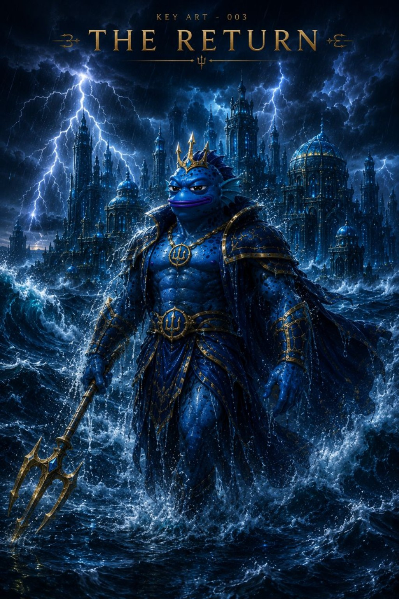
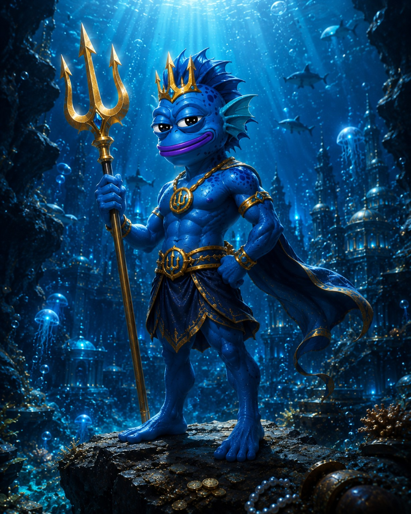
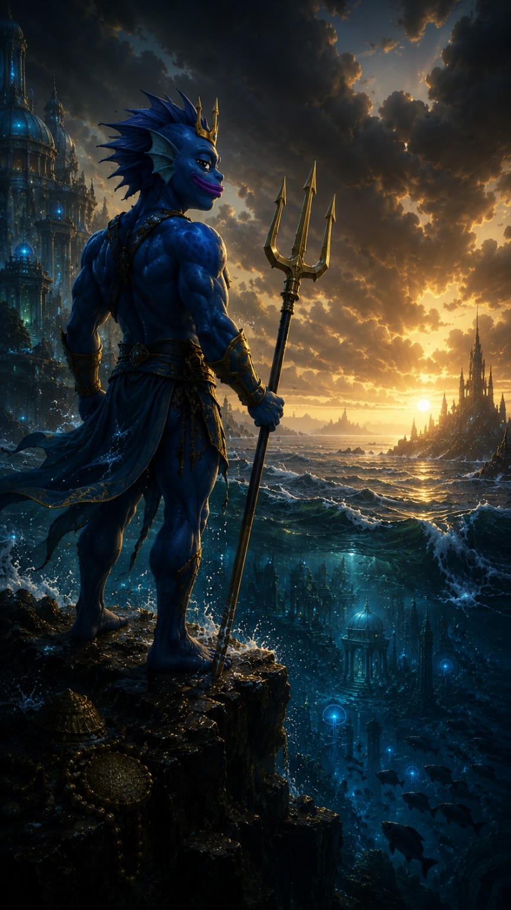
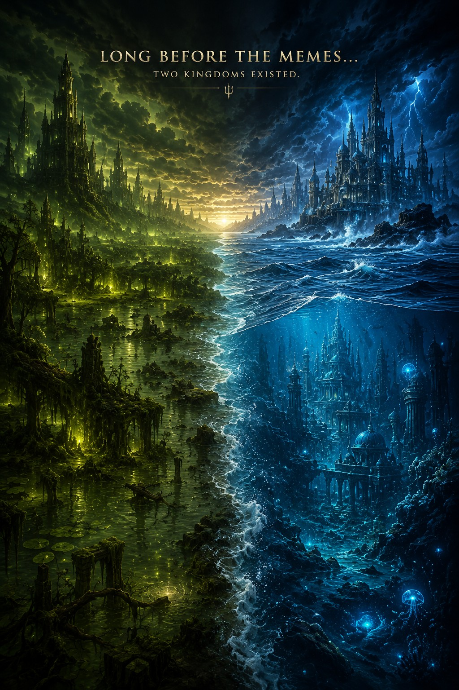

Ocean
Balance
Long before the modern age, six great kingdoms guarded the balance of creation. This first version of the portal opens only one path: the Ocean Kingdom.
Balance
Life
Memory
Legacy
Time
Freedom & Unity
From silence came the first elements.
Six realms rose to protect balance.
The guardians stood together.
The kingdoms did not die. They slept.
The Ocean Throne awakens again.

The ancient heart of the sea. A sleeping kingdom of storms, golden dawn, memory, and balance.
Enter the Lost CityThe first chapter leads to a city that was never destroyed. It waited beneath silence.
The sleeping seat of the Ocean Guardian.
A sacred symbol of authority, not conquest.
A sign of remembrance and awakening.

His mission is not to conquer the world. His journey begins with restoring balance between the First Kingdoms.
This is not the entire world. It is the first journey Trintope takes.


Trintope Universe is not only a website or a film. It is a world at the beginning of its journey. Chapter I has awakened the Ocean Kingdom. Five Great Kingdoms are still waiting.
Help create new films, artwork, music, animation, website chapters, and the next kingdoms of the Trintope Universe.
Share this world with friends, fans, artists, and people who love fantasy stories. Every new viewer helps the journey grow.
Follow the official creator and receive the latest updates from the Trintope Universe.
No levels. No amounts. Only names remembered as part of the beginning.
Five Great Kingdoms are still waiting. The journey has only begun.
Become Part of Trintope Universe